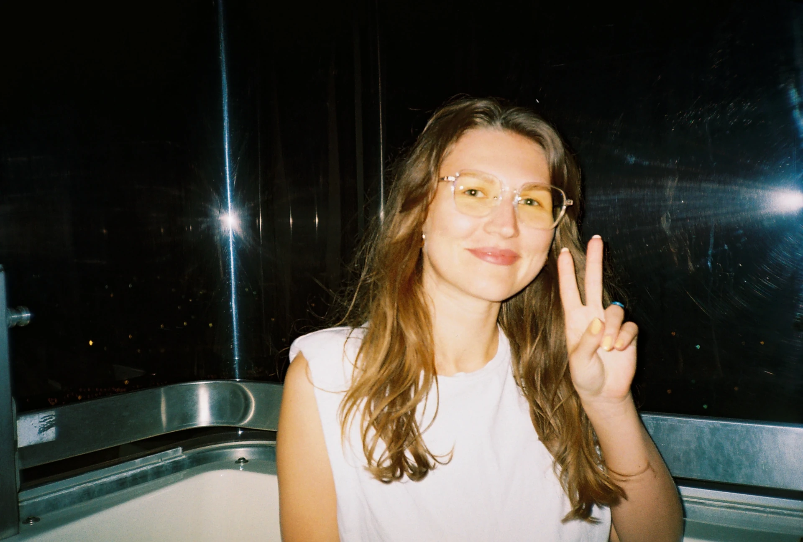
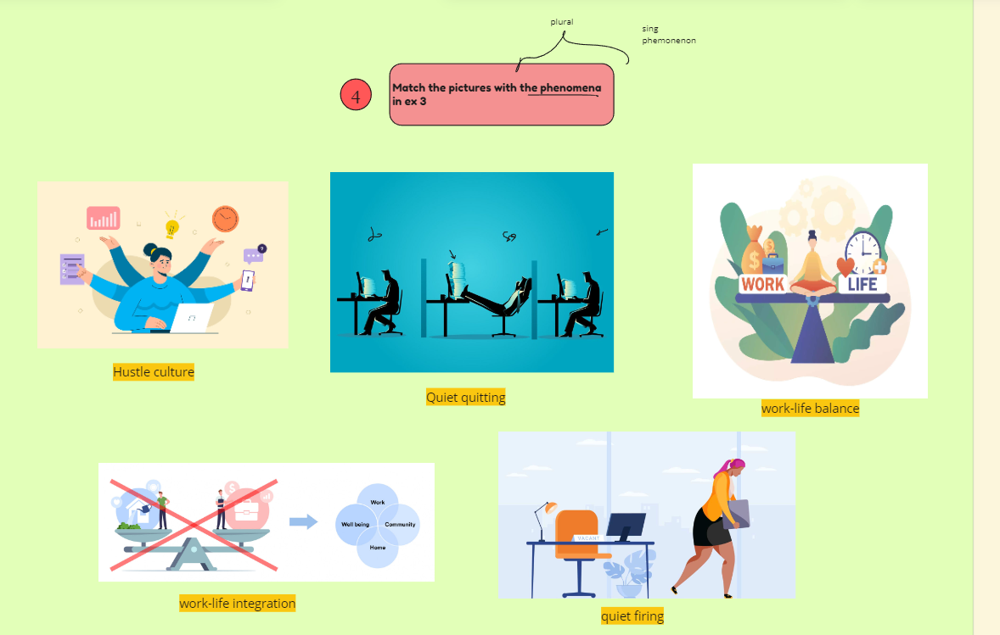
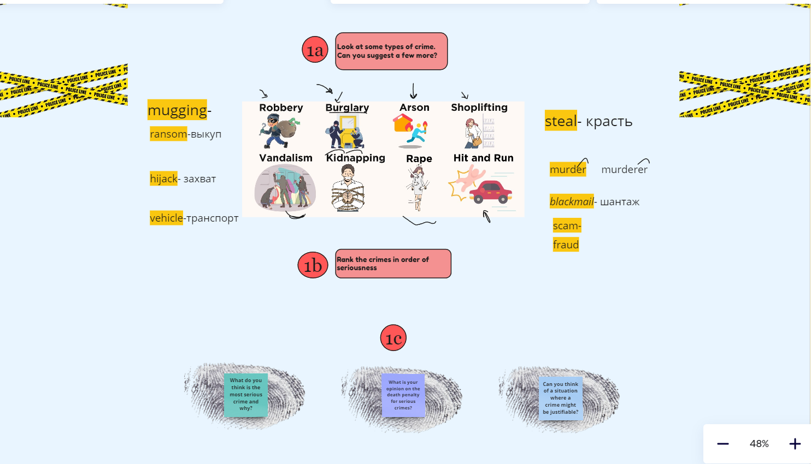
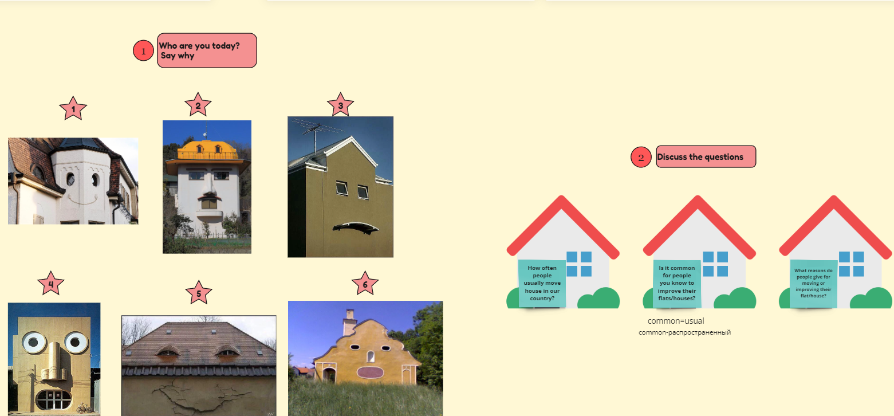
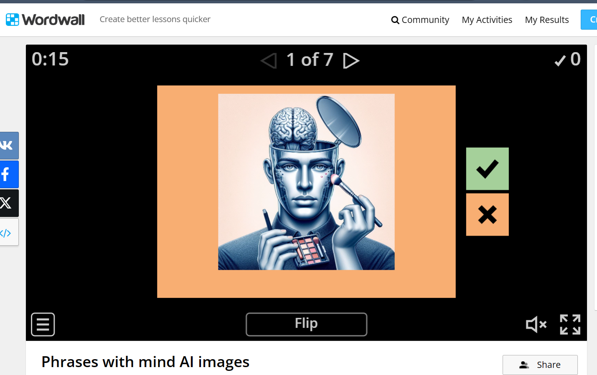
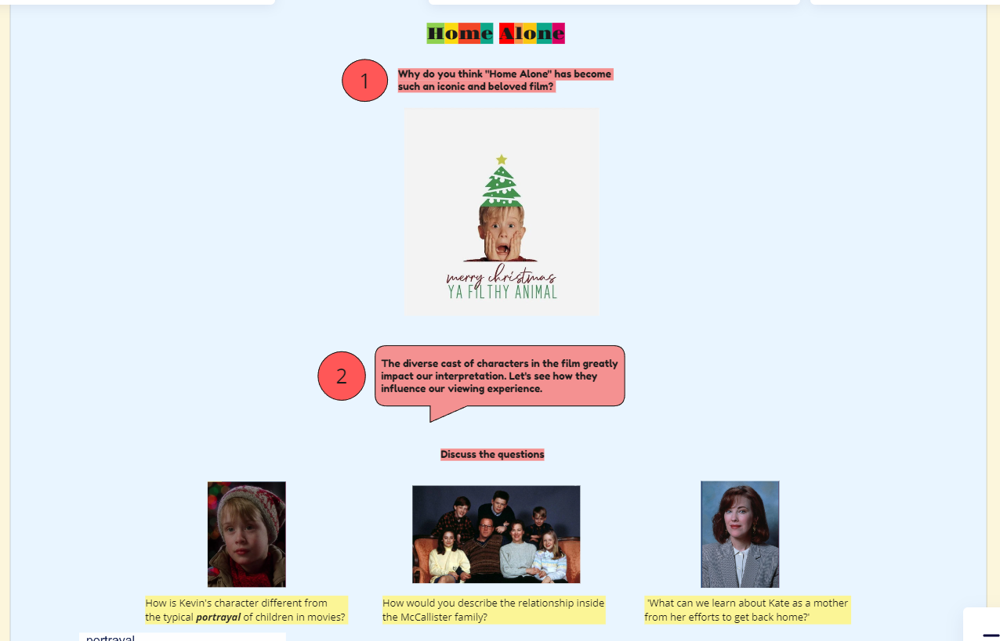
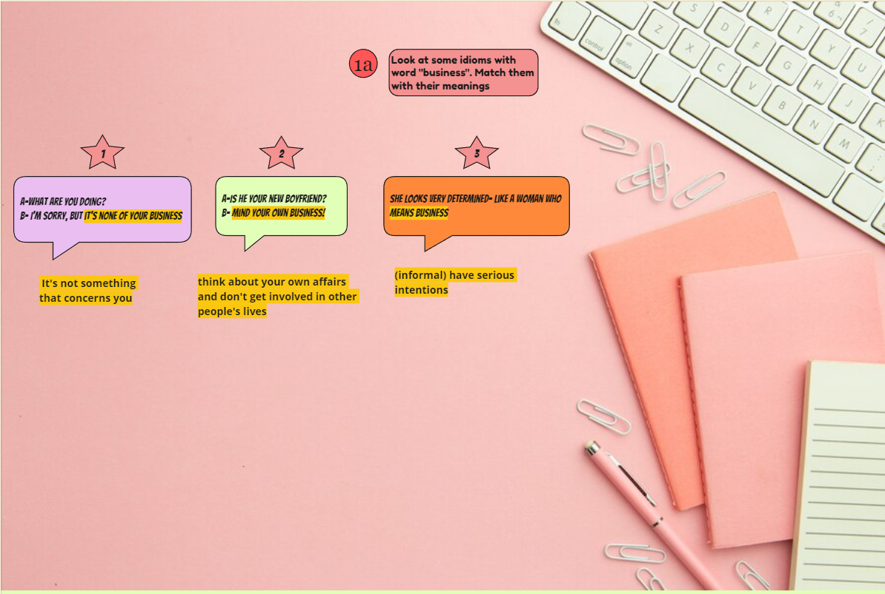

<!doctype html><html lang="ru"><meta charset="utf-8"><meta name="description" content="Кристина, the Репетитор"><meta name="viewport" content="width=device-width, initial-scale=1"><title>krissmieng</title><link rel="icon" type="image/x-icon" href="assets/images/favicon.ico"><link rel="stylesheet" href="assets/css/output.css"></html><div class="container mx-auto flex flex-col xl:gap-20 gap-10"><div class="navbar sm:justify-end"><div><ul class="menu menu-horizontal px-1 text-lg sm:flex-row flex flex-col"><li><a href="https://t.me/KrisSmi27" target="_blank"><svg width="24px" height="24px" version="1.1" xmlns="http://www.w3.org/2000/svg" xmlns:xlink="http://www.w3.org/1999/xlink" xml:space="preserve" xmlns:serif="http://www.serif.com/" style="fill-rule:evenodd;clip-rule:evenodd;stroke-linejoin:round;stroke-miterlimit:1.41421;"><path id="telegram-5" d="M12,0c-6.627,0 -12,5.373 -12,12c0,6.627 5.373,12 12,12c6.627,0 12,-5.373 12,-12c0,-6.627 -5.373,-12 -12,-12Zm0,2c5.514,0 10,4.486 10,10c0,5.514 -4.486,10 -10,10c-5.514,0 -10,-4.486 -10,-10c0,-5.514 4.486,-10 10,-10Zm2.692,14.889c0.161,0.115 0.368,0.143 0.553,0.073c0.185,-0.07 0.322,-0.228 0.362,-0.42c0.435,-2.042 1.489,-7.211 1.884,-9.068c0.03,-0.14 -0.019,-0.285 -0.129,-0.379c-0.11,-0.093 -0.263,-0.12 -0.399,-0.07c-2.096,0.776 -8.553,3.198 -11.192,4.175c-0.168,0.062 -0.277,0.223 -0.271,0.4c0.006,0.177 0.125,0.33 0.296,0.381c1.184,0.354 2.738,0.847 2.738,0.847c0,0 0.725,2.193 1.104,3.308c0.047,0.139 0.157,0.25 0.301,0.287c0.145,0.038 0.298,-0.001 0.406,-0.103c0.608,-0.574 1.548,-1.461 1.548,-1.461c0,0 1.786,1.309 2.799,2.03Zm-5.505,-4.338l0.84,2.769l0.186,-1.754c0,0 3.243,-2.925 5.092,-4.593c0.055,-0.048 0.062,-0.13 0.017,-0.188c-0.045,-0.057 -0.126,-0.071 -0.188,-0.032c-2.143,1.368 -5.947,3.798 -5.947,3.798Z"></path></svg> Связаться</a></li><li><a href="https://t.me/krissmieng" target="_blank"><svg width="24" height="24" xmlns="http://www.w3.org/2000/svg" fill-rule="evenodd" clip-rule="evenodd"><path d="M24 15.951c0-2.468-1.744-4.451-4.114-5.353.069-.395.114-.793.114-1.195 0-4.88-4.751-8.403-10-8.403-5.282 0-10 3.549-10 8.403 0 1.721.616 3.411 1.706 4.724.045 1.536-.852 3.741-1.661 5.346 2.168-.394 5.251-1.265 6.648-2.13 1.18.289 2.313.424 3.383.424l.273-.013c.866 2.251 3.314 4.052 6.6 4.052.748 0 1.54-.094 2.366-.297.978.604 3.137 1.215 4.654 1.491-.566-1.124-1.194-2.667-1.162-3.742.763-.919 1.193-2.101 1.193-3.307zm-3.148 4.084c-.396-.168-.421-.2-1.201-.682-1.011.247-1.683.438-2.702.438-2.179 0-3.76-1.016-4.492-2.265 3.247-.654 5.686-2.607 6.827-5.01 1.61.644 2.716 1.941 2.716 3.435 0 .542-.015 1.158-1.171 2.548-.023.763-.043 1.005.023 1.536zm-14.496-4.849c-.805.5-1.169.794-3.004 1.384.436-1.599.356-2.382.332-3.201-.318-.384-1.684-1.71-1.684-3.966 0-3.522 3.589-6.388 8-6.388 4.412 0 8 2.866 8 6.388 0 3.053-3.029 6.348-7.924 6.348-1.649 0-2.904-.364-3.72-.565zm6.643-3.537c-.212.071-.441-.044-.511-.256 0 0-1.496-.501-3.272.088l1.166 1.814c.121.179.037.422-.164.49l-.794.263-.167.028c-.149 0-.294-.064-.396-.179l-1.604-1.77c-.873.276-1.862-.042-2.192-.865-.076-.188-.114-.389-.114-.592 0-.585.327-1.183 1.038-1.533 3.559-1.747 4.128-3.696 4.128-3.696-.086-.262.11-.532.382-.532.169 0 .327.108.383.277l2.371 5.952c.071.212-.044.441-.254.511zm1.687-2.043l-.614-.261c.267-.634.293-1.371.014-2.058-.279-.688-.808-1.199-1.441-1.466l.26-.615c1.265.535 2.046 1.771 2.046 3.091 0 .454-.092.898-.265 1.309zm-1.063-.451l-.599-.254c.154-.365.169-.789.008-1.185-.16-.396-.466-.69-.83-.843l.253-.601c.518.219.952.635 1.179 1.198.229.564.207 1.165-.011 1.685z"></path></svg> Telegram Канал</a></li><li><a href="https://www.instagram.com/smychnikova/" target="_blank"><svg xmlns="http://www.w3.org/2000/svg" width="24" height="24" viewBox="0 0 24 24"><path d="M12 2.163c3.204 0 3.584.012 4.85.07 3.252.148 4.771 1.691 4.919 4.919.058 1.265.069 1.645.069 4.849 0 3.205-.012 3.584-.069 4.849-.149 3.225-1.664 4.771-4.919 4.919-1.266.058-1.644.07-4.85.07-3.204 0-3.584-.012-4.849-.07-3.26-.149-4.771-1.699-4.919-4.92-.058-1.265-.07-1.644-.07-4.849 0-3.204.013-3.583.07-4.849.149-3.227 1.664-4.771 4.919-4.919 1.266-.057 1.645-.069 4.849-.069zm0-2.163c-3.259 0-3.667.014-4.947.072-4.358.2-6.78 2.618-6.98 6.98-.059 1.281-.073 1.689-.073 4.948 0 3.259.014 3.668.072 4.948.2 4.358 2.618 6.78 6.98 6.98 1.281.058 1.689.072 4.948.072 3.259 0 3.668-.014 4.948-.072 4.354-.2 6.782-2.618 6.979-6.98.059-1.28.073-1.689.073-4.948 0-3.259-.014-3.667-.072-4.947-.196-4.354-2.617-6.78-6.979-6.98-1.281-.059-1.69-.073-4.949-.073zm0 5.838c-3.403 0-6.162 2.759-6.162 6.162s2.759 6.163 6.162 6.163 6.162-2.759 6.162-6.163c0-3.403-2.759-6.162-6.162-6.162zm0 10.162c-2.209 0-4-1.79-4-4 0-2.209 1.791-4 4-4s4 1.791 4 4c0 2.21-1.791 4-4 4zm6.406-11.845c-.796 0-1.441.645-1.441 1.44s.645 1.44 1.441 1.44c.795 0 1.439-.645 1.439-1.44s-.644-1.44-1.439-1.44z"></path></svg> Instagram</a></li></ul></div></div><div class="flex flex-col lg:gap-20 gap-10 mx-10 lg:mx-auto"><div class="flex lg:text-8xl text-5xl font-bold"><h1 class="lg:ml-20">Привет, <br>я Кристина </h1><div class="scale-x-[-1]"><p class="animate-wiggle origin-bottom-right">👋</p></div></div><div class="flex justify-end"><h2 class="lg:mr-20 lg:w-2/3 lg:text-4xl text-lg font-bold">Репетитор английского языка с 2014 года.<br>Я выбрала путь преподавания, чтобы вдохновлять и поддерживать людей в их стремлении к самосовершенствованию. <br>Изучение новых языков открывает перед вами весь мир и дарит возможность открыть новые горизонты личностного роста.<br>Моя миссия — помочь вам стать увереннее и счастливее!</h2></div><div class="flex justify-center"></div><div class="lg:text-2xl text-lg flex flex-col gap-10 xl:w-2/3 mx-auto"><p>Я закончила Минский Государственный Лингвистический университет, в 2023 году успешно прошла курс английского с преподавателем из Британии. Прохожу мастер-классы у топовых преподавателей и продолжаю прокачивать свои знания каждый день. Мои ученики успешно устраиваются на работу в ведущие международные компании, переезжают за границу и получают образование в престижных университетах.</p><p>Со мной скучные уроки остаются в прошлом! Я помогу вам преодолеть языковой барьер раз и навсегда. Мои занятия адаптированы для людей с различным уровнем владения английским и наполнены живым общением и интересными заданиями, далекими от стереотипов о нудных уроках. Используя коммуникативный подход, мы не просто учимся — мы общаемся. Я становлюсь не только вашим преподавателем, но и надежным другом, наставником в мире английского языкa.</p><div class="carousel carousel-center p-4 space-x-4"><div class="carousel-item"></div><div class="carousel-item"></div><div class="carousel-item"></div><div class="carousel-item"></div><div class="carousel-item"></div><div class="carousel-item"></div></div><p>Индивидуальный подход  — это то, за что меня ценят студенты. Отталкиваясь от ваших запросов, я строю наши занятия. Многочисленное раскрытие скобочек, перевод бесконечных абзацев и заучивание текстов остаётся в прошлом, мы фокусируемся на реальном общении и практическом применении языка. Я использую современные интерактивные инструменты (Miro, WordWall, Notion и др.), а также дополняю занятия актуальными материалами, такими как Youtube видео, статьи из известных изданий, видео из соцсетей и тд. </p><p>Домашние задания выполняются учениками самостоятельно, с моей проверкой предварительно до занятия, а сам разбор ошибок или возникших вопросов происходит непосредственно на уроке, что обеспечивает максимальную эффективность обучения. Моя поддержка доступна 24/7, и я всегда готова помочь вам в достижении ваших целей.</p><p>В качестве знакомства я провожу бесплатную получасовую консультацию, где мы сможем узнать друг друга поближе. Я задам пару вопросов для определения целей и уровня языка, а также продемонстрирую как проходит наша работа.</p></div></div><div class="overflow-x-auto"><table class="table sm:table-lg table-zebra"><thead class="lg:text-lg"><tr><th>Услуга</th><th>Время</th><th>Занятия</th><th>Цена</th></tr></thead> <tbody><tr><td>Ознакомительная консультация</td><td>30</td><td>1</td><td>0</td></tr><tr><td>Общий английский индивидуальное занятие</td><td>60</td><td>4</td><td>260</td></tr><tr><td>Общий английский парное занятие</td><td>60</td><td>4</td><td>200</td></tr><tr><td>Бизнес английский индивидуальное занятие</td><td>60</td><td>4</td><td>260</td></tr><tr><td>Бизнес английский парное занятие</td><td>60</td><td>4</td><td>200</td></tr><tr><td>Подготовка к собеседованию индивидуальное занятие</td><td>60</td><td>4</td><td>260</td></tr><tr><td>Разговорный киноклуб (4/6 человек)</td><td>90</td><td>1</td><td>25</td></tr></tbody></table></div><div class="text-lg flex flex-col xl:w-2/3 justify-center xl:mx-auto mx-1"><h2 class="text-3xl text-center font-bold mb-5">Отзывы</h2><div class="chat chat-end ml-20 drop-shadow-md translate-x-1/2"><div class="chat-bubble chat-bubble-accent max-w-4xl">Я начала лучше понимать устную речь, даже если не знаю все слова, начала понимать из контекста. Плюс не очень сильно (тк мы не долго занимаемся) увеличился словарный запас. Я поняла разницу между quite и quiet. Благоприятна ли атмосфера во время занятия? Да, мне нравится, что мы много разговариваем на разные темы Больше всего мне нравятся тексты и на словарь упражнения, не люблю грамматику Немного проще стало общаться на работе</div></div><div class="chat chat-start mr-20 drop-shadow-md -translate-x-1/2"><div class="chat-bubble chat-bubble-secondary max-w-4xl">Я начала разговаривать, времена разделились из одной каши в логическую структуру. Атмосфера-супер. Мне нравятся тесты после каждого раздела, особенно, упражнения со строением предложений. Определенно, изучение языка стало приятным моментом. Вижу улучшения даже в изучении польского, думаю, это имеет связь</div></div><div class="chat chat-end ml-20 drop-shadow-md translate-x-1/2"><div class="chat-bubble chat-bubble-accent max-w-4xl">Комфортная атмосфера, уже занимаюсь 2 года. Вижу хороший прогресс, новые слова в речи при общении и на работе. Начал работать на Америку и увеличил заработок</div></div><div class="chat chat-start mr-20 drop-shadow-md -translate-x-1/2"><div class="chat-bubble chat-bubble-secondary max-w-4xl">В первую очередь из важного - мне менее страшно говорить на английском. В моем топе предполагаемых причин провалов в использовании иностранного просто страх открыть рот и использовать его - на первом месте. Поэтому понижение планки страха и напряжения - это главное улучшения. Думаю, это какой- то психологический перенос - мол на занятии комфортно и безопасно говорить, и это состояние переносится в быт как-то.</div></div><div class="chat chat-end ml-20 drop-shadow-md translate-x-1/2"><div class="chat-bubble chat-bubble-accent max-w-4xl">Атмосфера и настроение занятий однозначно очень располагающие, комфортные, позитивные. У меня нет напряжение и волнения перед занятием, как это обычно бывает и что мне очень не нравится (не хочется энергию и ресурс тратить на дополнительные переживания). Это реально супер важно, так как не отталкивает от занятий и даже в самый сложный день нет мысли мол &#34;блин, я так устала, никакого ресурса не осталось, а тут еще этот напряжный английский, пожалуй сольюсь&#34;.</div></div><div class="chat chat-start mr-20 drop-shadow-md -translate-x-1/2"><div class="chat-bubble chat-bubble-secondary max-w-4xl">Если подытожить: я со своей стороны не сильно вкладываюсь, не супер много ресурса в язык направляю. Но даже при этом ты умудряешься успеть что-то заложить за занятие. Какой же был бы результат, если бы я сама регулярно дополнительно над этим работала Я очень благодарна (и благодарна Саше за рекомендацию). С тобой интересно, спокойно, ободряюще и очень полезно. Тебя приятно слушать (произношение, подача), легко коммуницировать, и занятия улучшают настрой</div></div></div><div class="text-center flex justify-center items-center gap-5"><p class="text-xl font-bold">"Понедельник" уже настал;) <br>Записывайся на ознакомительную консультацию </p></div><footer class="footer items-center p-4 flex justify-between"><aside class="items-center flex"><svg height="20" width="20" xmlns="http://www.w3.org/2000/svg" viewBox="0 0 512 512" xml:space="preserve"><path d="M476.886 337.609c-29.533-29.533-72.785-37.15-109.422-22.902l-53.474-53.474 145.25-145.25c32.028-32.028 32.028-83.954 0-115.981L256 203.242 52.759 0c-32.026 32.028-32.026 83.954 0 115.981l145.25 145.25-53.474 53.474c-36.636-14.248-79.889-6.631-109.422 22.902-39.841 39.843-39.841 104.668 0 144.511 39.843 39.843 104.668 39.843 144.511 0 36.303-36.303 39.512-93.344 9.656-133.334l66.721-66.721 66.721 66.721c-29.856 39.987-26.648 97.029 9.655 133.334 39.843 39.843 104.668 39.843 144.511 0 39.84-39.841 39.84-104.668-.002-144.509zM140.212 442.706c-18.109 18.111-47.577 18.111-65.686 0-18.111-18.109-18.111-47.577 0-65.686 18.109-18.111 47.577-18.111 65.686 0 18.11 18.109 18.11 47.577 0 65.686zm297.262 0c-18.109 18.111-47.577 18.111-65.686 0-18.111-18.109-18.111-47.577 0-65.686 18.109-18.111 47.577-18.111 65.686 0 18.111 18.109 18.111 47.577 0 65.686z"></path></svg><p>by <a class="link link-secondary font-bold" target="_blank" href="https://github.com/hyperpuncher">igor</a></p></aside><nav class="flex gap-4 md:place-self-center md:justify-self-end relative"><p class="text-3xl animate-bounce absolute bottom-8 right-1/3 select-none">👇</p><a href="https://t.me/krissmieng" target="_blank"><svg width="24" height="24" xmlns="http://www.w3.org/2000/svg" fill-rule="evenodd" clip-rule="evenodd"><path d="M20.699 11.069c1.947 1.015 3.3 2.81 3.3 4.977 0 1.204-.433 2.387-1.202 3.304-.032 1.075.601 2.618 1.171 3.741-1.529-.277-3.702-.886-4.686-1.49-.833.202-1.631.295-2.385.295-2.919 0-5.185-1.398-6.278-3.271 6.427-.207 9.818-4.482 10.08-7.556zm-10.798-10.07c-5.282 0-10 3.522-10 8.34 0 1.708.615 3.385 1.705 4.687.046 1.525-.851 3.713-1.66 5.307 2.168-.392 5.251-1.257 6.648-2.114 7.696 1.873 13.307-2.837 13.307-7.88 0-4.844-4.751-8.34-10-8.34zm3.048 10.74c-.212.071-.441-.044-.511-.256 0 0-1.496-.501-3.272.088l1.166 1.814c.121.179.037.422-.164.49l-.794.263-.167.028c-.149 0-.294-.064-.396-.179l-1.604-1.77c-.873.276-1.862-.042-2.192-.865-.076-.188-.114-.389-.114-.592 0-.585.327-1.183 1.038-1.533 3.559-1.747 4.128-3.696 4.128-3.696-.086-.262.11-.532.382-.532.169 0 .327.108.383.277l2.371 5.952c.071.212-.044.441-.254.511zm1.687-2.043l-.614-.261c.267-.634.293-1.371.014-2.058-.279-.688-.808-1.199-1.441-1.466l.26-.615c1.265.535 2.046 1.771 2.046 3.091 0 .454-.092.898-.265 1.309zm-1.063-.451l-.599-.254c.154-.365.169-.789.008-1.185-.16-.396-.466-.69-.83-.843l.253-.601c.518.219.952.635 1.179 1.198.229.564.207 1.165-.011 1.685z"></path></svg></a> <a href="https://t.me/KrisSmi27" target="_blank"><svg width="24px" height="24px" version="1.1" xmlns="http://www.w3.org/2000/svg" xmlns:xlink="http://www.w3.org/1999/xlink" xml:space="preserve" xmlns:serif="http://www.serif.com/" style="fill-rule:evenodd;clip-rule:evenodd;stroke-linejoin:round;stroke-miterlimit:1.41421;"><path id="telegram-1" d="M18.384,22.779c0.322,0.228 0.737,0.285 1.107,0.145c0.37,-0.141 0.642,-0.457 0.724,-0.84c0.869,-4.084 2.977,-14.421 3.768,-18.136c0.06,-0.28 -0.04,-0.571 -0.26,-0.758c-0.22,-0.187 -0.525,-0.241 -0.797,-0.14c-4.193,1.552 -17.106,6.397 -22.384,8.35c-0.335,0.124 -0.553,0.446 -0.542,0.799c0.012,0.354 0.25,0.661 0.593,0.764c2.367,0.708 5.474,1.693 5.474,1.693c0,0 1.452,4.385 2.209,6.615c0.095,0.28 0.314,0.5 0.603,0.576c0.288,0.075 0.596,-0.004 0.811,-0.207c1.216,-1.148 3.096,-2.923 3.096,-2.923c0,0 3.572,2.619 5.598,4.062Zm-11.01,-8.677l1.679,5.538l0.373,-3.507c0,0 6.487,-5.851 10.185,-9.186c0.108,-0.098 0.123,-0.262 0.033,-0.377c-0.089,-0.115 -0.253,-0.142 -0.376,-0.064c-4.286,2.737 -11.894,7.596 -11.894,7.596Z"></path></svg></a> <a href="https://www.instagram.com/smychnikova/" target="_blank"><svg xmlns="http://www.w3.org/2000/svg" x="0px" y="0px" width="24" height="24" viewBox="0 0 50 50"><path d="M 16 3 C 8.83 3 3 8.83 3 16 L 3 34 C 3 41.17 8.83 47 16 47 L 34 47 C 41.17 47 47 41.17 47 34 L 47 16 C 47 8.83 41.17 3 34 3 L 16 3 z M 37 11 C 38.1 11 39 11.9 39 13 C 39 14.1 38.1 15 37 15 C 35.9 15 35 14.1 35 13 C 35 11.9 35.9 11 37 11 z M 25 14 C 31.07 14 36 18.93 36 25 C 36 31.07 31.07 36 25 36 C 18.93 36 14 31.07 14 25 C 14 18.93 18.93 14 25 14 z M 25 16 C 20.04 16 16 20.04 16 25 C 16 29.96 20.04 34 25 34 C 29.96 34 34 29.96 34 25 C 34 20.04 29.96 16 25 16 z"></path></svg></a></nav></footer></div>